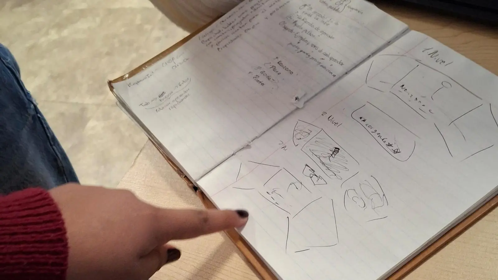
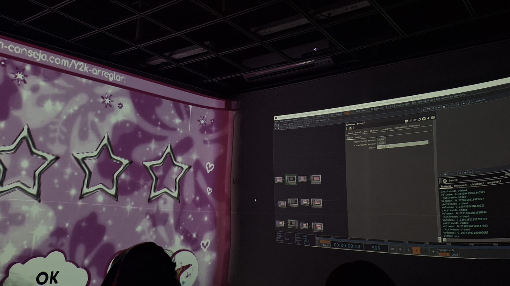
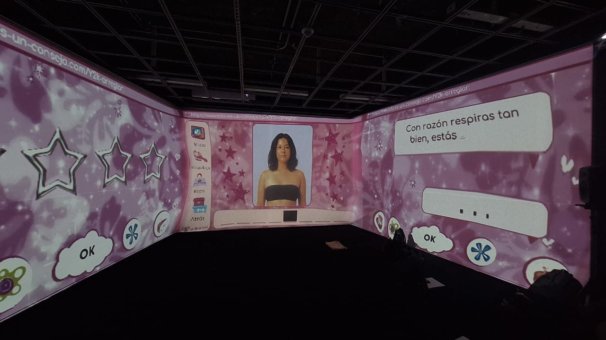
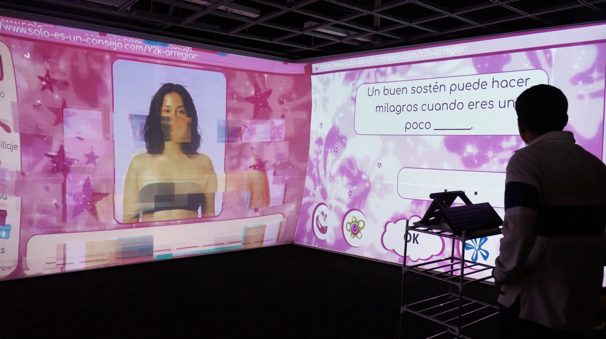
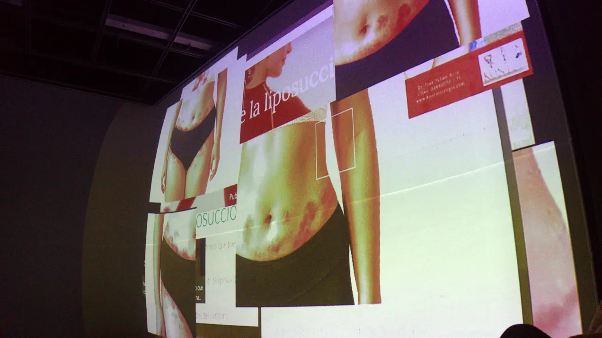

ꨄ︎ Solo es un consejo ꨄ︎
── .✦ “Solo es un consejo” es una instalación interactiva audiovisual donde se expone y critica cómo es que la industria y el internet imponen ideales inalcanzables, viendo al cuerpo de la mujer como un producto visual y desechable, y cómo esto impacta directamente en la autoestima y la construcción de la identidad.
⭑ Autoras:
✦ Angelica Trejo
✦ Estefania Hernández
✦ Monserrath Jiménez
⭑ Agosto 2025
Universidad Autónoma Metropolitana, Unidad Lerma
Instalación audiovisual interactiva multicanal
“Solo es un consejo” es una instalación interactiva audiovisual que expone y critica cómo la industria de la moda femenina e internet imponen ideales de belleza inalcanzables, transformando el cuerpo de la mujer en un producto visual, moldeable y desechable. Estas imposiciones no solo afectan profundamente la autoestima y la construcción de la identidad, sino que alimentan discursos violentos y normalizan prácticas que ejercen presión constante para modificar el cuerpo para cumplir con expectativas externas.
El cuerpo femenino se convierte así en un objeto intervenido por el mercado, atrapado en una lógica de consumo donde la presión por encajar lleva a las personas a invertir en productos, tratamientos y procedimientos que prometen “arreglar” lo que se considera un defecto, alimentando a la misma industria que impone esos estándares.
La instalación busca invitar al público a reflexionar sobre el canon de belleza como un juego cruel e imposible, como un entorno que exige encajar.
⭑ Documentación del Procedimiento




Instalación audiovisual interactiva multicanal
Solo es un consejo nació como una crítica hacia cómo la sociedad moldea los cuerpos de las mujeres, tratándolos como productos que deben encajar en ideales imposibles. Nos preguntamos cómo estos estereotipos afectan no solo la autoestima, sino también la identidad de muchas mujeres en la cultura digital.
Para construir la pieza, tomamos inspiración estética de los juegos en línea para niñas, de las revistas de moda de los 2000 y del clásico juego del "ahorcado", con el que estructuramos la dinámica principal. También nos basamos en artículos académicos, videos y obras artísticas que analizan la violencia estética y la presión sobre los cuerpos femeninos.
Inicialmente, pensamos en un collage con partes de cuerpos, e incluso contemplamos finales alternativos donde la figura femenina pudiera "morir". Sin embargo, esa idea fue descartada al no sentirse del todo ética ni clara dentro del mensaje que queríamos comunicar.
En lo técnico, el desarrollo comenzó desde el deseo de usar un teclado físico, donde el espectador pudiera participar activamente en el juego.
Esta obra nos permitió profundizar más en el impacto de la violencia estética: un tipo de agresión poco reconocida, pero muy presente en el entorno digital, nos dimos cuenta de cómo, en redes sociales, la gente se siente cómoda insultando, humillando y haciendo sentir menos a las mujeres solo por su apariencia. Esta violencia disfrazada de “consejo” es la que quisimos visibilizar con nuestra obra.
⭑ Presentación de la obra


La instalación propone una dinámica inspirada en el juego del “ahorcado”, donde los participantes deben adivinar palabras que completan frases disfrazadas de consejos bienintencionados hacia el cuerpo femenino. En el centro de la sala, un teclado físico permite ingresar letras para revelar la palabra oculta en la pantalla principal, junto a la imagen de una mujer.
Tras cada acierto, aparecen breves “intermedios” con efectos de glitch que aluden a cómo estos discursos afectan la percepción corporal. A medida que avanza, los glitches se intensifican y la figura femenina se transforma, incorporando alteraciones físicas sugeridas por las frases.
Al completar la última palabra, la imagen reaparece marcada por todos los cambios impuestos, mostrando cicatrices y moretones. Finalmente, un mensaje en las tres pantallas revela el canon de belleza como un juego cruel e imposible, un sistema que exige encajar y somete al cuerpo a una violencia constante disfrazada de cuidado.
⭑ Contáctanos
☆ estefi_h.d ☆ ☆ moonday_18 ☆ ☆ anggg.731 ☆